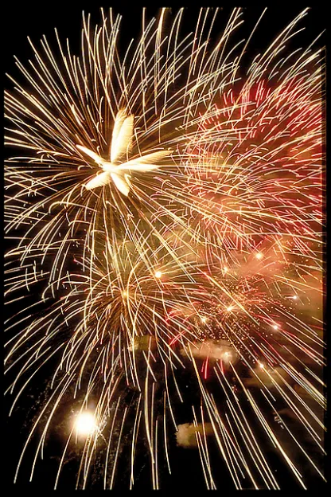

MTVM - Chương 16 (2)

Chương 16 (tiếp)
Bên ngoài quảng trường trời đã tạnh mưa và mặt trăng đang cố ló mình ra khỏi những tầng mây. Gió đang thổi. Ban nhạc của quân đội đang chơi một điệu nhạc nào đó và đám đông tụ tập lại phía bên kia quảng trường nơi người nghệ nhân pháo hoa và con trai ông ta đang cố đốt lên những chiếc đèn trời[1]. Một ngọn đèn bùng lên lập lòe ánh lửa, nghiêng theo một góc lớn, và bị rách toạc bởi con gió và bị thổi bay về phía mấy ngôi nhà trên quảng trường. Một số rơi xuống đám đông. Ngọn lửa ma-giê bốc lên và thuốc phóng nổ tung và đuổi theo đám đông. Không có đám nhảy múa nào trên quảng trường khi ấy. Nền đá lát sỏi quá ướt và trơn.
Brett đi cùng Bill và nhập hội với chúng tôi. Chúng tôi đứng giữa đám đông và quan sát Don Mauel Orquito, ông vua pháo hoa, đứng trên một cái bệ nhỏ, thận trọng đốt đèn với những chiếc gậy, ngay trên đầu đám đông để thả đi những chiếc đèn trời theo hướng gió. Gió kéo chúng xuống, và khuôn mặt của Don Manuel Orquito mướt mồ hôi dưới ánh sáng của những bông pháo hoa đầy kỳ công của ông ta đang rơi xuống đám đông và tấn công và rượt đuổi họ, cháy xèo xèo và vỡ vụn, dưới chân mọi người. Mọi người la lên mỗi khi có một khối giấy hình cầu sáng chói lảo đảo, bốc cháy, và rơi xuống.
“Họ ắt hẳn đang nguyền rủa Don Manuel,” Bill nói.
“Làm sao anh biết ông ta là Don Manuel?” Brett thắc mắc.
“Tên ông ta có trên tờ bướm của chương trình. Don Manuel Ortiquo, tiết mục pirotecnico[2] của esta ciudad[3].”
“Globos illuminados[4],” Mike nói. “Bộ sưu tập globos illuminados. Đấy là thông tin trên tờ giấy.”
Gió đưa tiếng nhạc đi xa.
“Em bảo này, em ước gì có một cái bay lên thật,” Brett nói. “Cái thằng cha Don Manuel kia trông điên quá.”
“Ông ta chắc phải làm việc hàng tuần liền để cho chúng có thể bay lên, thành chữ ‘Chào mừng San Fermin,’” Bill nói.
“Globos illuminados,” Mike nói. “Một đám globos illuminados man dại.”
“Đi nào,” Brett giục. “Mình không nên đứng đây đâu.”
“Phần nữ tính trong nàng muốn làm một ly,” Mike chế nhạo.
“Làm sao mà anh biết được,” Brett phản công.
Bên trong, quán café đông đúc và ầm ĩ. Không ai biết chúng tôi bước vào. Chúng tôi không tìm được một chiếc bàn còn trống. Cả quán café ồn ã như ong vỡ tổ.
“Đi thôi, ra khỏi đây vậy,” Bill nói.
Bên ngoài, các đấu sĩ đang bước đi dưới mái hiên với điệu bộ dõng dạc như khi họ bước vào trường đấu. Một vài người Anh và người Mỹ tới từ Biarritz trong bộ đồ thể thao ngồi rải rác bên những chiếc bàn. Vài người phụ nữ nhìn chằm chặp vào những người đi đường bằng cái kính cặp mũi. Chúng tôi làm quen với nhau, vào một lúc nào đấy, có cả một người bạn của Bill đến từ Biarritz. Cô ấy ở cùng với một cô khác ở Grand Hotel. Cô kia đau đầu và đã đi nằm từ sớm.
“Quán bar đây rồi,” Mike nói. Đó là Bar Milano, một quán bar nhỏ, chật hẹp nơi anh có thể gọi đồ ăn và nhảy nhót ở căn phòng đằng sau. Tất cả chúng tôi cùng ngồi xuống một chiếc bàn và gọi một chai Fundador. Quán bar không đến mức đông nghịt người. Chẳng có gì diễn ra cả.
“Nơi quái quỷ gì thế này,” Bill cằn nhằn.
“Vẫn còn sớm quá.”
“Mình cứ mang chai rượu đi và quay lại sau vậy,” Bill rủ. “Tôi không muốn ngồi đây trong một tối thế này đâu.”
“Thế thì đi gặp mấy bạn người Anh vậy,” Mike đề nghị. “Tôi muốn gặp bọn Anh quá.”
“Bọn họ tệ lắm,” Bill nói. “Bọn họ chui ra từ đâu thế?”
“Họ tới từ Biarritz,” Mike trả lời. “Họ tới đây để tham dự ngày cuối cùng của lễ hội là lạ nho nhỏ của đất nước Tây Ban Nha này.”
“Tôi sẽ chuốc say họ,” Bill nói.
“Bạn đúng là một cô gái xinh đẹp.” Mike quay sang người bạn của Bill. “Bạn đến đây khi nào?”
“Thôi đi, Michael.”
“Tôi bảo là, cô ấy là một cô gái đẹp. Bạn từ đâu đến? Làm sao mà tôi lại không nhận ra từ trước nhỉ? Bạn dễ thương quá. Mình đã gặp nhau chưa? Đi cùng tôi với Bill nhé. Bọn này đi mừng lễ hội với lũ người Anh đây.”
“Tôi sẽ chuốc say bọn chúng,” Bill nói. “Bọn chúng đang làm cái quái gì ở fiesta này chứ?”
“Đi nào,” Mike giục. “Chỉ ba chúng mình thôi. Chúng ta sẽ làm lễ cho bọn người Anh chết tiệt kia. Tôi hi vọng bạn không phải là người Anh đấy chứ? Tôi là người Scotland. Tôi ghét bọn Anh lắm. Tôi sẽ đi làm lễ cho chúng. Đi nào, Bill.”
Chúng tôi nhìn họ qua cửa sổ, ba người tay trong tay, đi về quán café. Pháo bông đang được bắn lên trên quảng trường.
“Em sẽ ngồi lại đây,” Brett nói.
“Anh ở lại với em,” Cohn nói.
“Ôi, không cần đâu!” Brett nói. “Vì Chúa, anh hãy đi đâu đó đi. Anh không thấy là Jake và tôi muốn nói chuyện riêng à?”
“Anh không nhận thấy,” Cohn trả lời. “Anh nghĩ là anh sẽ ngồi đây bởi vì anh thấy hơi say.”
“Cái lý do quái quỷ gì để ngồi cùng người khác thế. Nếu say, thì anh về khách sạn mà ngủ đi. Lên giường mà nằm đi.”
“Em đã đủ bất lịch sự với anh ta chưa?” Brett hỏi. Cohn đã rời đi. “Chúa ơi! Em phát ốm lên được với hắn!”
“Hắn ta không đóng góp được nhiều lắm vào cuộc vui.”
“Hắn cũng làm em tuyệt vọng nữa.”
“Hắn cư xử rất tệ.”
“Siêu tệ. Hắn đã có được cơ hội để cư xử tuyệt vời.”
“Có thể hắn ta đang rình bọn mình ngay ngoài cửa lúc này.”
“Vâng. Có lẽ vậy. Anh biết đấy em cũng hiểu được hắn ta cảm thấy thế nào. Hắn không tin được là nó chẳng có nghĩa gì cả.”
“Anh biết.”
“Không có ai xử tệ như thế cả. Ôi, em thấy chán lắm rồi. Cả Michael nữa. Michael mới dễ thương làm sao.”
“Chuyện đấy khó cho Mike quá.”
“Vâng. Nhưng anh ấy đâu cần phải biến mình thành một kẻ đáng ghét như thế.”
“Ai cũng xử tệ cả,” tôi nói. “Em chỉ cần cho họ một cơ hội phù hợp.”
“Anh thì không như thế.” Brett nhìn tôi.
“Anh cũng khốn nạn như Cohn thôi,” tôi nói.
“Anh yêu, mình đừng nói về mấy chuyện tồi tệ này thêm nữa.”
“Được rồi. Thế nói về bất cứ điều gì em thích vậy.”
“Anh đừng khắt khe thế. Anh là người duy nhất còn lại bên em, và đêm nay em thấy rất tệ.”
“Em còn có Mike mà.”
“Vâng, Mike. Chả phải là anh ấy hay ho lắm sao?”
“À,” tôi nói, “Mike đang vất vả lắm, khi Cohn cứ luẩn quẩn và phải thấy hắn ta bên em.”
“Em không biết thế ư, anh yêu? Xin anh đừng khiến em cảm thấy tồi tệ thêm nữa.”
Tôi chưa từng thấy Brett căng thẳng như thế bao giờ. Nàng tránh nhìn thẳng vào mắt tôi mà nhìn về phía bức tường.
“Có muốn đi dạo không?”
“Có. Mình đi thôi.”
Tôi đậy nắp chai Fundador và gửi lại chỗ người pha chế rượu.
“Mình hãy uống thêm một ly cái thứ này nữa,” Brett nói. “Thần kinh của em đang căng lên như dây đàn.”
Mỗi chúng tôi uống một ly amontillado[5] pha brandy êm dịu.
“Đi nào,” Brett nói.
Khi bước ra khỏi cửa tôi thấy Cohn đi ra từ sau tán cây.
“Đúng là hắn ở đây thật,” Brett cũng nhận ra.
“Hắn không thể rời em nửa bước.”
“Con quỷ tội nghiệp!”
“Anh không thấy thương hắn. Chính anh cũng ghét hắn.”
“Em cũng ghét hắn,” nàng rùng mình. “Em ghét cái kiểu cam chịu của hắn.”
Chúng tôi bước đi tay trong tay xuống con phố nhỏ để rời khỏi đám đông và ánh đèn nơi quảng trường. Con đường tối tăm và sũng nước, và chúng tôi đi dọc theo nó tới công sự ở bên rìa thị trấn. Chúng tôi đi qua những cửa hàng rượu có ánh đèn hắt ra từ khung cửa vào con phố đêm ướt đẫm, và tiếng nhạc đột ngột vang lên.
“Muốn vào trong không?”
“Không.”
Chúng tôi đi ngang bãi cỏ còn ướt và đi vào bờ tường đá của công sự. Tôi trải một tờ báo trên mặt đá và Brett ngồi xuống. Xuyên qua cánh đồng là màu đen của đêm, và chúng tôi có thể nhìn thấy những ngọn núi. Gió nổi lên trên cao và đẩy những đám mây trôi ngang mặt trăng. Bên dưới chúng tôi là mảng sân tối của công sự. Phía đằng sau là những rặng cây và bóng tối của thánh đường, và thị trấn in bóng dưới ánh trăng.
“Em đừng buồn nhé,” tôi nói.
“Em thấy khủng khiếp lắm,” Brett trả lời. “Mình đừng nói gì cả.”
Chúng tôi nhìn ra cánh đồng. Hàng cây dài tăm tối dưới ánh trăng. Đây đó có ánh đèn pha rọi ra từ những chiếc ô tô đang chạy trên con đường ngoằn ngoèo dẫn lên núi. Phía trên đỉnh núi chúng tôi nhìn thấy ánh sáng của pháo đài. Ở bên dưới phía tay trái là con sông. Nước sông dâng cao sau trận mưa, đen ngòm và êm ả. Những hàng cây dọc bờ sông cũng chìm trong bóng tối. Chúng tôi ngồi đó và lặng lẽ ngắm nhìn. Brett nhìn thẳng về phía trước. Đột nhiên nàng run rẩy.
“Lạnh quá.”
“Em muốn quay lại chưa?”
“Mình đi qua công viên đi.”
Chúng tôi trèo xuống. Trời lại đầy mây. Công viên tối om bên dưới những hàng cây.
“Anh vẫn yêu em chứ, Jake?”
“Ừ,” tôi trả lời.
“Bởi vì em là đồ bỏ đi,” Brett nói.
“Sao lại thế?”
“Em là đồ bỏ đi. Em phát điên lên về cậu bé Romero kia. Em nghĩ là em đang yêu cậu ta.”
“Anh sẽ không làm như vậy nếu anh là em.”
“Em không làm gì được. Em là kẻ vứt đi. Nó đang giày vò em.”
“Em đừng làm thế.”
“Em không làm gì được nữa cả. Em chẳng bao giờ làm được cái gì ra hồn cả.”
“Em phải ngừng lại thôi.”
“Làm sao em ngăn nó lại được? Em chẳng ngăn được chuyện gì cả. Thấy không?”
Bàn tay nàng run rẩy.
“Lúc nào em cũng thế cả.”
“Em không được phép làm như thế.”
“Em không làm được. Dù gì thì em cũng là kẻ vứt đi mà. Anh không thấy sự khác biệt ư?”
“Không.”
“Em phải làm gì đó. Em phải làm cái điều mà em muốn làm. Em đã đánh mất lòng tự trọng rồi.”
“Em không cần phải làm thế.”
“Ôi, anh yêu, anh đừng khắt khe thế. Anh nghĩ em dính vào gã Do Thái khốn kiếp kia là vì cái gì, và cả Mike với cái kiểu cư xử của anh ta nữa?”
“Ừ.”
“Em không thể lúc nào cũng say khướt được.”
“Không.”
“Ôi, anh yêu, làm ơn hãy ở bên em. Làm ơn hãy ở bên em và trông chừng cho em qua những chuyện này.”
“Ừ.”
“Em không nói chuyện này là đúng. Nhưng với em thì chẳng hề sai. Có Chúa chứng giám, em chưa bao giờ thấy mình khốn nạn như lúc này.”
“Em muốn anh phải làm gì?”
“Đi nào,” Brett nói. “Mình hãy đi và tìm anh ấy.”
Chúng tôi cùng đi xuống con đường lát sỏi trong công viên trong bóng đêm, dưới những tán cây và rồi ra khỏi những tán cây và qua cánh cổng vào con phố dẫn về thị trấn.
Pedro Romero đang ngồi trong quán café. Cậu ta đang ngồi cùng với những đấu sĩ và các nhà phê bình khác. Họ đang hút xì gà. Khi chúng tôi bước vào họ nhìn lên. Romero mỉm cười và gật đầu. Chúng tôi ngồi xuống một cái bàn cách đó nửa căn phòng.
“Anh hãy gọi anh ấy sang đây cùng uống một ly đi.”
“Chưa được đâu. Cậu ấy sẽ tự qua thôi.”
“Em không thể nhìn anh ấy.”
“Cậu ấy đẹp trai mà,” tôi nói.
“Em luôn làm những điều em muốn.”
“Anh biết.”
“Em thấy mình khốn nạn lắm.”
“Ồ,” tôi nói.
“Chúa ơi!” Brett nói, “những điều mà một người đàn bà cứ phải trải qua.”
“Hả?”
“Ôi, em thấy mình như một con khốn.”
Tôi nhìn sang bàn bên kia. Pedro Romero đang mỉm cười. Cậu ta nói cái gì đó với những người ngồi cùng bàn, rồi đứng dậy. Cậu bước tới bàn chúng tôi. Tôi đứng dậy và bắt tay cậu.
“Cậu làm một ly nhé?”
“Ông vừa uống với tôi xong mà,” cậu bảo. Cậu tự ngồi xuống, xin phép Brett mà chẳng nói gì cả. Cậu ta cư xử thật đàng hoàng. Nhưng cậu vẫn tiếp tục hút điếu xì gà của cậu. Nó rất hợp với khuôn mặt cậu.
“Cậu thích xì gà à?” tôi hỏi.
“À, vâng. Tôi luôn hút xì gà.”
Đây là một trong những điệu bộ của cậu. Nó khiến cậu trông già dặn hơn. Tôi chú ý tới làn da của cậu. Nó thật sạch sẽ và mịn màng và nâu bóng. Có một vết sẹo hình tam giác nơi xương gò má của cậu. Tôi thấy cậu nhìn Brett. Cậu cảm thấy có gì đó giữa hai người. Cậu hẳn phải nhận thấy điều đó khi Brett đưa tay ra cho cậu. Cậu rất thận trọng. Tôi nghĩ cậu đã chắc, nhưng cậu vẫn không muốn phạm phải sai lầm.
“Ngày mai cậu đấu à?” tôi hỏi.
“Vâng,” cậu ta trả lời. “Algabeno bị thương ngày hôm nay ở Madrid. Ông đã nghe tin chưa?”
“Chưa,” tôi nói. “Có nghiêm trọng không?”
Cậu lắc đầu.
“Không đâu. Anh ấy bị thương ở chỗ này,” cậu chỉ bằng tay. Brett tóm lấy và tách các ngón tay ra.
“Ồ!” cậu nó bằng tiếng Anh, “bà biết xem tay ư?”
“Đôi lúc. Cậu có phiền không?”
“Không đâu. Tôi thích lắm.” Cậu xòe rộng bàn tray trên mặt bàn. “Bà hãy nói cho tôi biết tôi sẽ sống lâu, và trở nên giàu có.”
Cậu vẫn rất lịch sự, nhưng cậu đã chắc ăn hơn. “Nhìn xem,” cậu nói, “bà có nhìn thấy con bò nào trong tay tôi không?”
Cậu cười. Bàn tay cậu thật đẹp và cổ tay thì nhỏ.
“Có hàng nghìn con bò,” Brett trả lời. Giờ nàng không còn hồi hộp nữa. Nàng thật yêu kiều.
“Tốt quá,” Romero cười. “Đến tận một nghìn,” cậu nói bằng tiếng Tây Ban Nha. “Bà xem cho tôi nữa đi.”
“Bàn tay đẹp quá,” Brett nói. “Em nghĩ cậu ấy sẽ sống rất lâu.”
“Nào hãy nói với tôi ấy. Bà đừng nói với bạn của bà.”
“Tôi nói rằng cậu sẽ sống lâu lắm.”
“Tôi biết,” Romero nói. “Tôi sẽ không chết đâu.”
Tôi gõ đầu ngón tay lên mặt bàn. Romero nhìn thấy. Cậu lắc đầu.
“Không. Đừng làm thế. Lũ bò là bạn tốt nhất của tôi.”
Tôi dịch lại câu ấy cho Brett.
“Cậu giết bạn mình ư?” nàng hỏi.
“Luôn luôn,” cậu nói bằng tiếng Anh, và cười. “Vì thế chúng không giết được tôi.” Cậu nhìn nàng qua chiếc bàn.
“Cậu hiểu rõ tiếng Anh nhỉ.”
“Vâng,” cậu ta trả lời. “Khá tốt, đôi khi. Nhưng tôi không để ai thấy cả. Như thế thì tệ lắm, một torero[6] mà lại đi nói tiếng Anh.”
“Tại sao?” Brett hỏi.
“Như thế tệ lắm. Người ta không thích thế. Vẫn chưa.”
“Sao lại không cơ chứ?”
“Họ không thích thế đâu. Đấu sĩ thì không được phép như thế.”
“Thế đấu sĩ thì phải thế nào?”
Cậu cười và kéo mũ xuống che mắt và thay đổi góc độ của điếu xì gà và biểu cảm trên khuôn mặt.
“Phải như thế này này,” cậu trả lời. Tôi liếc sang. Cậu đang bắt chước chính xác biểu tượng quốc gia. Cậu mỉm cười, khuôn mặt cậu tự nhiên trở lại. “Thôi. Tôi phải quên tiếng Anh đi thôi.”
“Cậu hẵng đừng quên vội,” Brett nói.
“Không ư?”
“Không.”
“Thế cũng được.”
Cậu lại cười.
“Tôi cũng thích một chiếc mũ giống thế,” Brett nói.
“Tốt. Tôi sẽ kiếm cho bà một chiếc.”
“Được đấy. Để xem cậu có giữ lời không nhé.”
“Có mà. Tôi sẽ kiếm được một chiếc ngay tối nay.”
Tôi đứng lên. Romero cũng vậy.
“Ngồi đi,” tôi nói. “Tôi phải đi tìm mấy người bạn và mang họ về đây.”
Cậu nhìn tôi. Đấy là cái nhìn cuối cùng để hỏi thăm rằng liệu có hiểu lầm gì không. Nó được hiểu hoàn toàn chính xác.
“Ngồi xuống đi,” Brett nói với cậu ta. “Cậu phải dạy tôi tiếng Tây Ban Nha đấy nhé.”
Cậu ta ngồi xuống và nhìn nàng qua chiếc bàn. Tôi bước ra. Mấy ánh mắt khó chịu của những đấu sĩ phía bàn bên xoáy vào tôi. Những ánh mắt không hài lòng. Khi tôi quay lại và nhìn vào trong quán, khoảng hai mươi phút sau đó, Brett và Pedro Romero không còn ở đó nữa. Cốc cà phê và ba cái ly cognac rỗng không của chúng tôi vẫn còn ở trên mặt bàn. Một người bồi bàn tiến đến với chiếc khăn và nhặt hết cốc lên rồi lau sạch chiếc bàn.
[1] đèn trời: ở châu Á được biết đến với cái tên gọi là đèn Khổng Minh, là loại đèn lồng làm bằng giấy, dùng để thả cho bay lên trời sau khi đốt đèn. Trong Thế chiến II, quân đội Nhật từng dùng đèn trời như một thứ vũ khí tấn công.
[2] Tiếng Tây Ban Nha trong nguyên bản: pháo hoa
[3] Tiếng Tây Ban Nha trong nguyên bản: thị trấn này
[4] Tiếng Tây Ban Nha trong nguyên bản: đèn trời
[5] amontillado: loại rượu vị sherry có màu tối hơn loại rượu fino nhưng nhạt màu hơn rượu oloroso. Loại rượu này được đặt tên theo vùng Montilla của Tây Ban Nha, nơi lần đầu tiên phương pháp sản xuất ra nó xuất hiện vào thế kỷ 18. Rượu amontillado sherry được hình thành từ loại rượu fino, được tăng thêm độ cồn 13.5% bằng cách pha thêm men ủ từ các loại thực vật và tránh tiếp xúc với không khí. Sau khi được tăng thêm độ cồn, amontillado sẽ oxy hóa chậm, tiếp xúc với không khí thông qua các thùng gỗ sồi Mỹ hoặc Canada, và có được màu đậm hơn và hương vị phong phú hơn so với fino. Rượu amontillado thường có hương vị đặc trưng bởi hương thơm của hạt phỉ, thuốc lá, thảo mộc thơm và sự thanh tao, tinh tế của gỗ sồi. Sự hợp nhất của hai quá trình lên men khác nhau làm cho loại rượu Amontillado có hương vị cực kỳ tinh tế và hấp dẫn.
[6] torero: (tiếng TBN) đấu sĩ bò tót
Comments